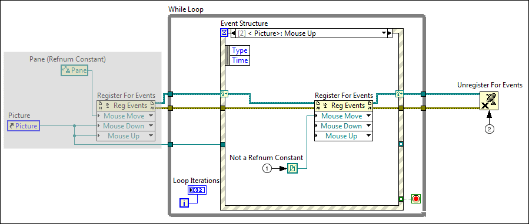

Step 3: Unregister for the Event before You Unregister for All Events
After LabVIEW registers for the event you want to occur only under certain circumstances, LabVIEW continues to generate that event until you specify to unregister for the event. You can design an event case to specify under what circumstances you want LabVIEW to unregister for the event. In this example, LabVIEW registers the Mouse Move event when the user clicks the picture control on the front panel and unregisters the Mouse Move event when the user releases the mouse button.
What to Use
Use the following block diagram objects to modify event registration dynamically.
Create the following block diagram to unregister the Mouse Move event so LabVIEW does not generate this event unless the Mouse Down event occurs.

The following list describes important details about the previous step.
Use the Not a Refnum constant to unregister the Mouse Move event when the user releases the mouse button on the picture control. Unregistering for this event stops LabVIEW from generating the event again unless the Event structure executes to handle the Mouse Down event case, which contains the code to register the Mouse Move event.
Unregister for all events associated with the event registration refnum.
Caveats and Recommendations
To confirm that the Event structure executes to handle each event, you can wire an indicator to the iteration terminal on the While Loop to check the iteration count at run time.
When designing event cases for the Event structure, use a latched stop Boolean control to determine when to stop the VI.
 Add
Add Find
Find